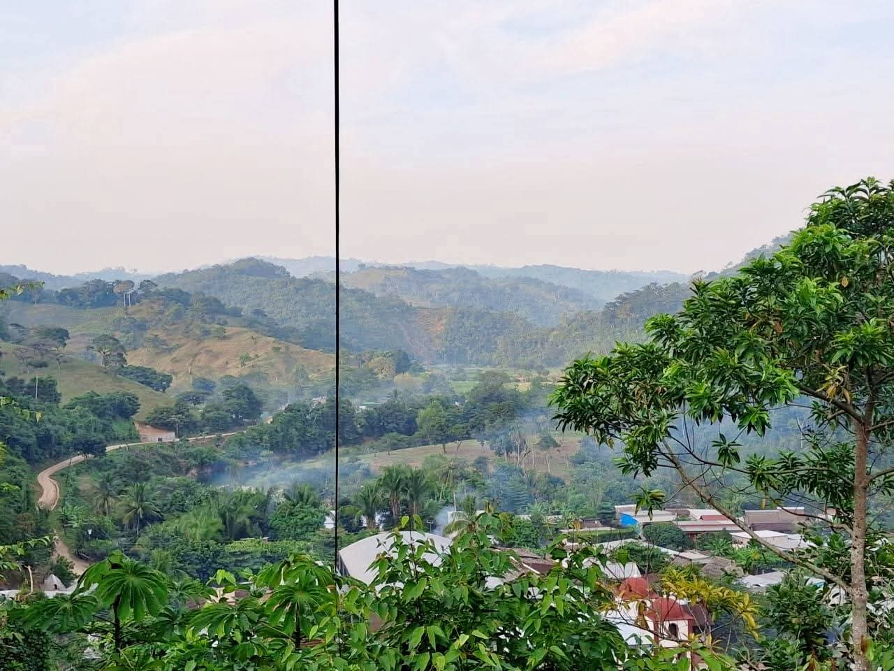

La comunidad de San Pedro Tepinapa Ejidal, se caracteriza por ser una comunidad rural, con un clima húmedo y abundantes lluvias durante gran parte del año. Sus habitantes mantienen una relación cercana con la naturaleza y se distinguen por la convivencia familiar y comunitaria.